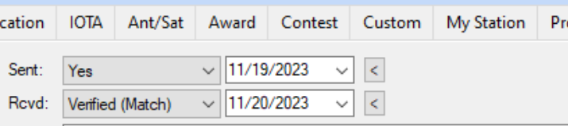

I've had the same exchange with Charles (and the other M0 QSL manager using the same system). They agreed that it could be made more clear. That was months ago and here we are.
pr0t was LOTW confirmed in less than a day, all 7 slots came through. I await the card.

73,
Rick nk7i
Earlier this year I had a pleasant email exchange with Charles, M0OXO, in which he agreed that “direct” QSL was a bit confusing, and confirmed that a “direct” request includes LoTW as well. 73, Bruce K3NQ Sent from my iPhoneOn Nov 25, 2023, at 09:45, KE1B via Chat <chat@ncdxc.org> wrote: On Nov 25, 2023, at 9:30 AM, Prashant Chaudhary via Chat <chat@ncdxc.org> wrote: The options are confusing, for sure. I asked for "Direct" and received the LotW already. Hoping to receive the card eventually in the mail as well. W7PC PrashantI asked for LoTW and a Bureau card, and got the LoTW almost immediately. I have enough cards, but for an ATNO it’s nice. Actually, last week, I THREW OUT *thousands* of cards, all from my various DXpeditions. I kept them as a matter of course, at first, but I don’t really track entities or band/mode slots for my DXpedition calls, and realized they were just taking up space in the shack. (Boxes and boxes of these cards.) They all went out in a dump run last week. Where I live, I have to take my own trash and recyclables to the dump myself, about once every two months or so. It was a weird feeling, throwing bags and bags of QSL cards into the dump pile. By the way, at least here, you can’t recycle paper anymore. They don’t accept it, because there is absolutely no market for it. (They used to ship it to China, but even the Chinese don’t want it anymore. Shame.) They don’t take most plastics either, just soft-drink and milk bottles. I still keep cards for my personal calls, and (for now, at least) my contest call K6MMM. Rich KE1B _______________________________________________ Chat mailing list Chat@ncdxc.org http://mail.ncdxc.org/mailman/listinfo/chat_ncdxc.org_______________________________________________ Chat mailing list Chat@ncdxc.org http://mail.ncdxc.org/mailman/listinfo/chat_ncdxc.org